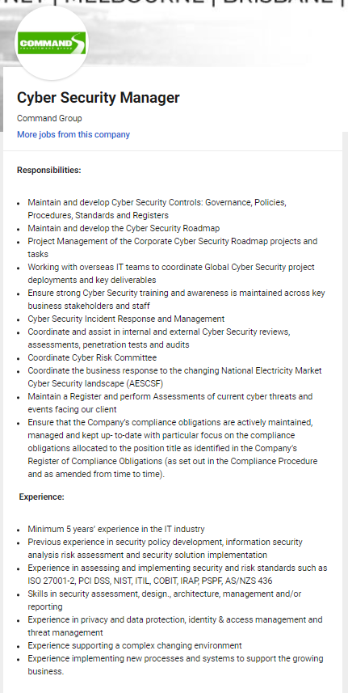

Ideal Job
Job Advertisement

Job Description
Develop and maintain cybersecurity solutions. Ensuring that if there are any breaches,
they get resolved quickly with minimal loss of data integrity. Cyber Security is one area of interest to me and as the manager of the role,
I would have the say in what and how things happen.
Skillset Required
• The following skillsets/experience would be required to perform this role.
o Management
o Programming/Development experience
o Risk analysis and mitigation
o Intrusion detection
o Malware analysis
o CEH
o Cloud security
o Security analysis
Current Relevant Skills
• I currently have the management skills required for the position.
• Basic understanding of computers and their operating systems.
• Basic level of networking.
Plan to Obtain Skills Required
I plan to first complete this course and then my Bachelor of IT,
then I would go onto a Master of Cyber Security while hopefully working in the industry to then go into a management role after my masters.